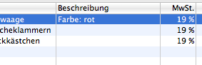

Legt fest, ob die Preise in der Artikelliste der Dokumente (Rechnungen, Lieferscheine ..) als Netto oder Brutto angezeigt werden

Wir ein Dokument dupliziert, wird zum Beispiel aus einer Bestellung eine Rechnung erzeugt, so werden Adresse und Artikel übernommen. Es ist möglich, den Kommentartext ebenfalls zu übernehmen, oder beim duplizierten Dokument leer zu lassen.
Der Kommentar einer Bestellung ist derjenige, den der Kunde bei seiner Bestellung im Webshop eingegeben hat. Es ist nicht immer sinnvoll, diesen Text auch auf die Rechnung weiter zu geben. Der Text dort ist vielmals eine Information an den Kunden.

In den Dokumenten kann ein neuer Artikel über den Produktauswahl-Dialog eingefügt werden. Diese Einstellung legt fest, ob die Produktbeschreibung mit übernommen wird. Oftmals ist die Produktbeschreibung ein längerer Text und nicht geeignet für die Artikelliste eines Dokumentes. Ist diese Option nicht ausgewählt bleibt das Feld 'Beschreibung' der Artikelliste leer und kann mit zusätzlicher Information wie 'Farbe: rot' versehen werden.
Siehe auch Dokumenteneditor